ROI Heatmap Ablation Results
This dashboard summarizes the comparison between a pose-only 6DoF predictor and a predictor that adds compact RF heatmap features.
ROI cells
8 x 8 x 8 = 512
Horizons
50 ms, 100 ms, 150 ms, 200 ms
Sessions
825
Best Top-10
72.96% at 200 ms
Chinese report explanation: REPORT_OVERVIEW_ZH.md. English report explanation: REPORT_OVERVIEW.md. Raw table: summary_table.csv.
ROI grid
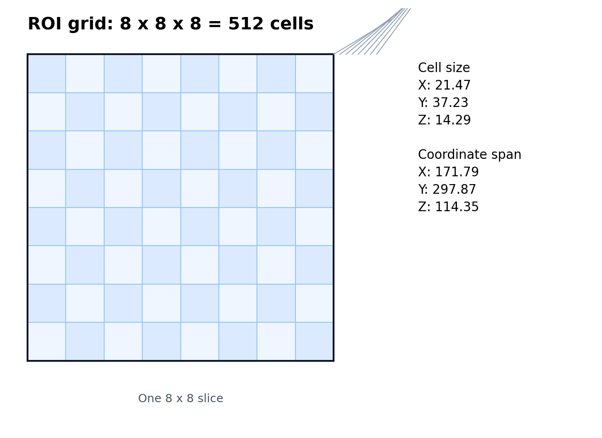
Dataset split
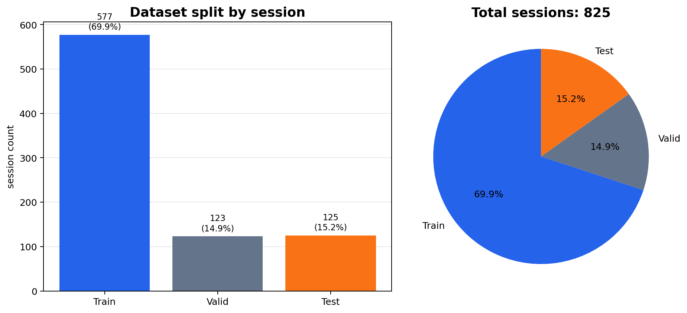
Top-1 accuracy
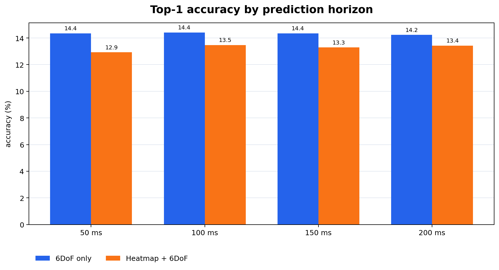
Top-3 accuracy
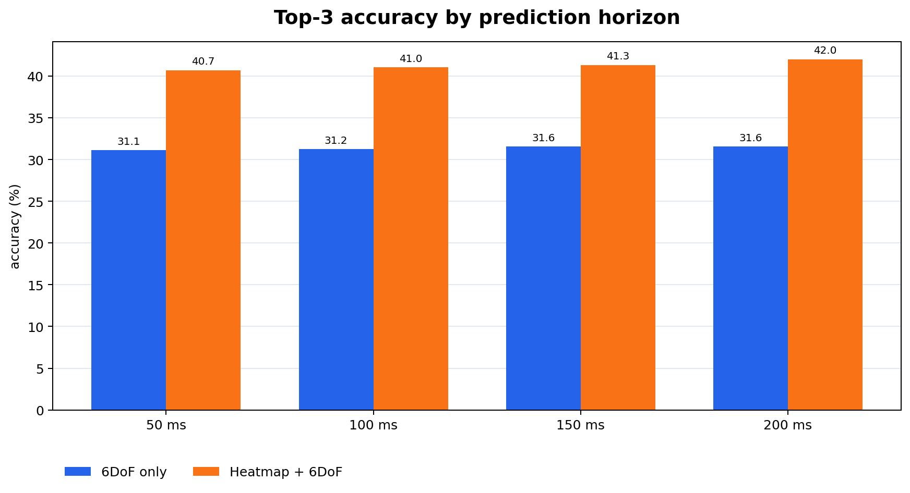
Top-5 accuracy
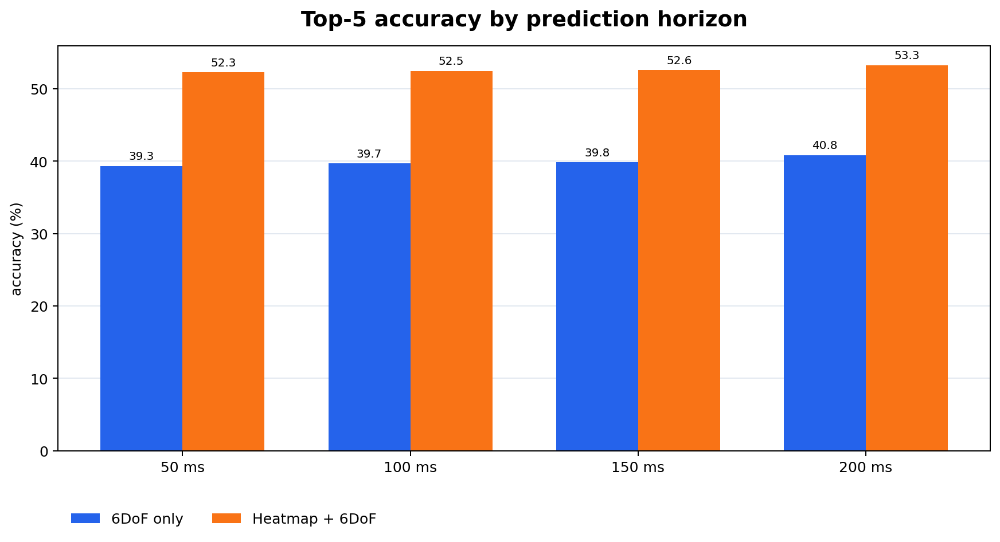
Top-10 accuracy
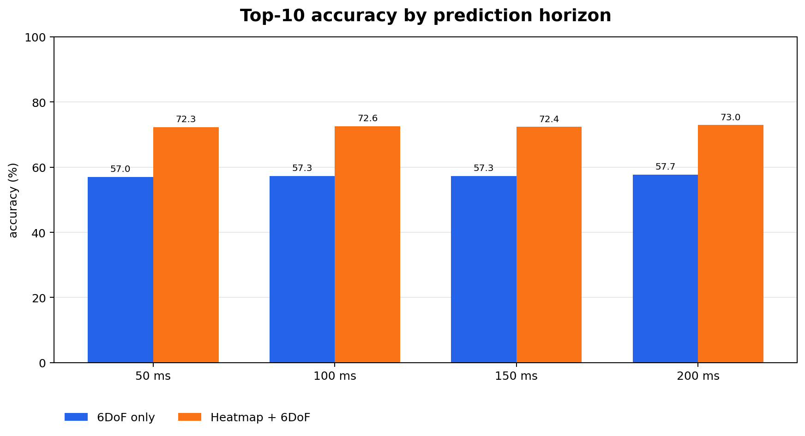
Accuracy improvement
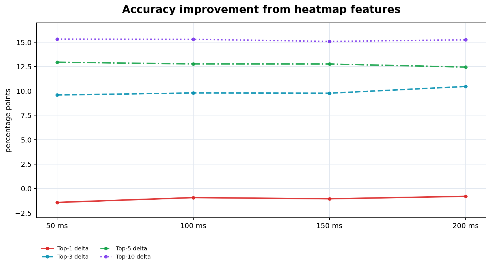
ROI distance error
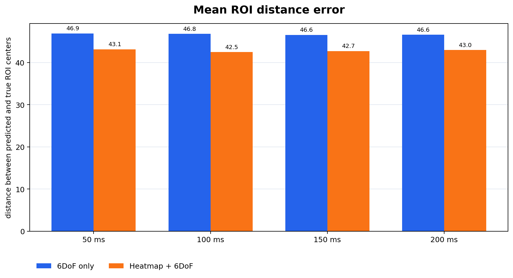
Latency
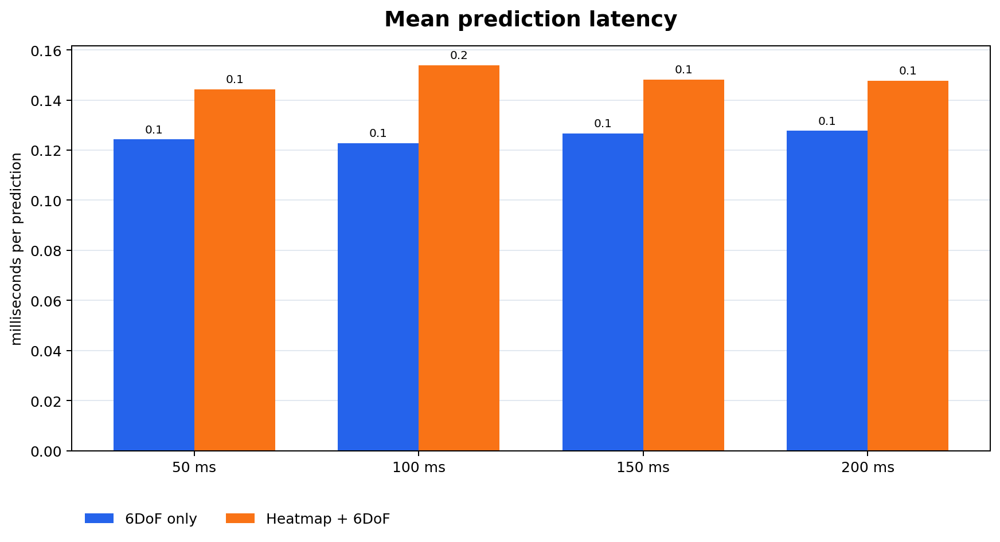
Memory
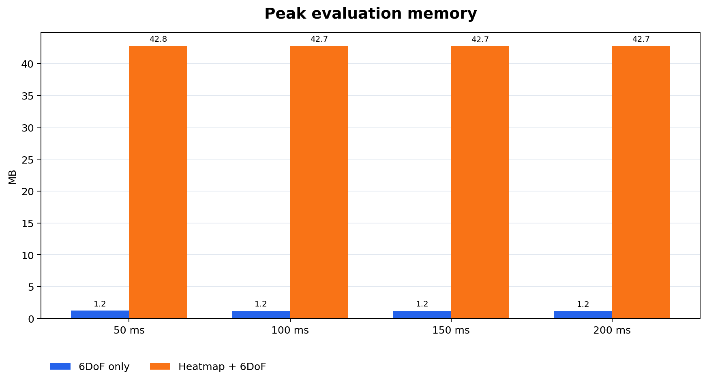
Training loss
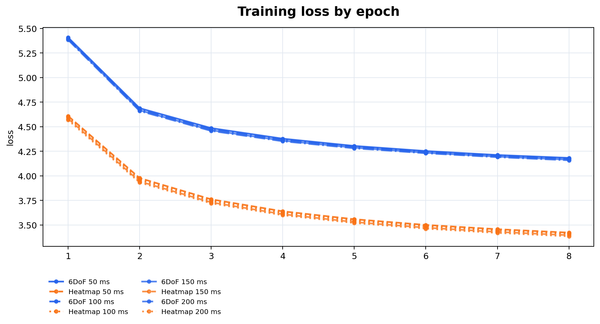